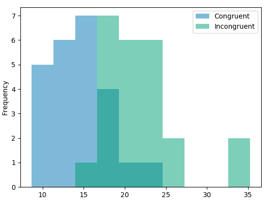

背景信息
在一个 Stroop （斯特鲁普）任务中，参与者得到了一列文字，每个文字都用一种油墨颜色展示。参与者的任务是将文字的打印颜色大声说出来。这项任务有两个条件：一致文字条件，和不一致文字条件。在一致文字条件中，显示的文字是与它们的打印颜色匹配的颜色词，如“红色”、“蓝色”。在不一致文字条件中，显示的文字是与它们的打印颜色不匹配的颜色词，如“紫色”、“橙色”。在每个情况中，我们将计量说出同等大小的列表中的墨色名称的时间。每位参与者必须全部完成并记录每种条件下使用的时间。
调查问题
作为一般说明，请确保记录你在创建项目时使用或参考的任何资源。作为项目提交的一部分，你将需要报告信息来源。
我们的自变量是什么？因变量是什么？
答：自变量：文字含义与文字颜色是否一致。
因变量：说出同等大小列表中文字颜色的时间。
此任务的适当假设集是什么？你需要以文字和数学符号方式对假设集中的零假设和对立假设加以说明，并对数学符号进行定义。你想执行什么类型的统计检验？为你的选择提供正当理由（比如，为何该实验满足你所选统计检验的前置条件）。
答： 因为此任务中同一个参与者参加了两次测试，所以所得两组测试样本是相依样本。我们想知道两种不同条件 (文字含义与文字颜色一致条件、文字含义与文字颜色不一致条件) 下，说出同等大小列表中文字颜色的时间是否存在显著差异，因此此任务的假设集如下：
零假设(H0)是不存在显著差异：μcon = μincon
对立假设(HA)是存在显著差异：μcon ≠μincon
其中，μcon表示文字含义与文字颜色一致条件下说出文字颜色的时间的总体均值，
μincon表示文字含义与文字颜色不一致条件下说出文字颜色的时间的总体均值。
由于：(1) 此任务的总体参数μ(总体均值)和σ(总体标准偏差)是不知道的，只有样本数据；
(2) 此任务中每个参与者是独立参加测试的，每个参与者互不影响；
(3) 此任务中同一个参与者前后参加了两种不同条件(文字含义与文字颜色一致条件、文字含义与文字颜色不一致条件)下的测试，所得两组测试样本是相依样本；
(4) 我们认为两组测试样本分别来自的总体近似正态分布(从问题4的两组样本数据分布的直方图可以估计)；
(5) 我们认为两组测试样本数据可以用来估计总体方差；
(6) 我们认为此任务的两组相依样本的总体方差大致相等。
所以在此次任务中我们采用相依样本的t检验。
另外，由于此任务中我们假设两种不同条件(文字含义与文字颜色一致条件、文字含义与文字颜色不一致条件)下说出文字颜色的时间不同(没有方向性)，所以采用双尾检验；
最后，我们取常用显著性水平α=0.05。
综上所述，我们准备执行的统计检验类型是：α= 0.05的t检验中的双尾检验。
报告关于此数据集的一些描述性统计。包含至少一个集中趋势测量和至少一个变异测量。
答：一致文字条件下样本的描述性统计：
均值：Xcon = 14.051
中位数：Mecon = 14.357
范围：Xmaxcon - Xmincon = 22.328 - 8.63 = 13.698
IQRcon = Q3con - Q1con = 16.004 - 11.344 = 4.66
样本标准偏差：S con = 3.559
不一致文字条件下样本的描述性统计：
均值：Xincon = 22.016
中位数：Meincon = 21.018
范围：Xmaxincon - Xminincon = 35.255 - 15.687 = 19.568
IQRincon = Q3incon - Q1incon = 23.894 - 18.644 = 5.25
样本标准偏差：S incon = 4.797
提供显示样本数据分布的一个或两个可视化。用一两句话说明你从图中观察到的结果。
答：两组样本数据分布的直方图如下：

说明：横轴表示说出文字颜色的时间(组距约为2.7)，纵轴表示频率
观察结果：不一致文字条件(Incongruent)下样本数据普遍比一致文字条件(Congruent)下样本数据大，每种条件下样本数据基本呈偏态分布。
现在，执行统计测试并报告你的结果。你的置信水平和关键统计值是多少？你是否成功拒绝零假设？对试验任务得出一个结论。结果是否与你的期望一致？
答：计算统计量：
统计样本量n = 24；
取显著性水平α=0.05，自由度df = 23，双尾t检验，查表得到t临界值tcritical = ±2.069；
计算差异点估计μincon -μcon = Xincon - Xcon = 7.965；
计算差异的样本标准偏差Sd = 4.865；
计算均值标准误差SEM = Sd / n1/2 = 4.865 / 241/2) =0.993；
计算t统计量t = (μincon -μcon) / (Sd / n1/2) = (μincon -μcon) / SEM = 7.965 / 0.993 = = 8.021
计算p值，查询得知 p < 0.0001，明显小于0.05。
结论：因为t统计量8.021远大于右侧t临界值(右侧t临界值为2.069)，也就是p值明显小于0.05，所以拒绝零假设。这意味着，与文字含义与文字颜色一致条件下相比，参与者在文字含义与文字颜色不一致条件下说出文字颜色的时间有显著差异，这符合预期。
可选：你觉得导致所观察到的效应的原因是什么？你是否能想到会取得类似效应的替代或类似任务？进行一些调查研究将有助于你思考这两个问题！
答：略。
参考：
数据可视化用到的工具：python 3.6，模块pandas (0.20.1)、matplotlib (2.0.2)
找P值：www.graphpad.com/quickcalcs